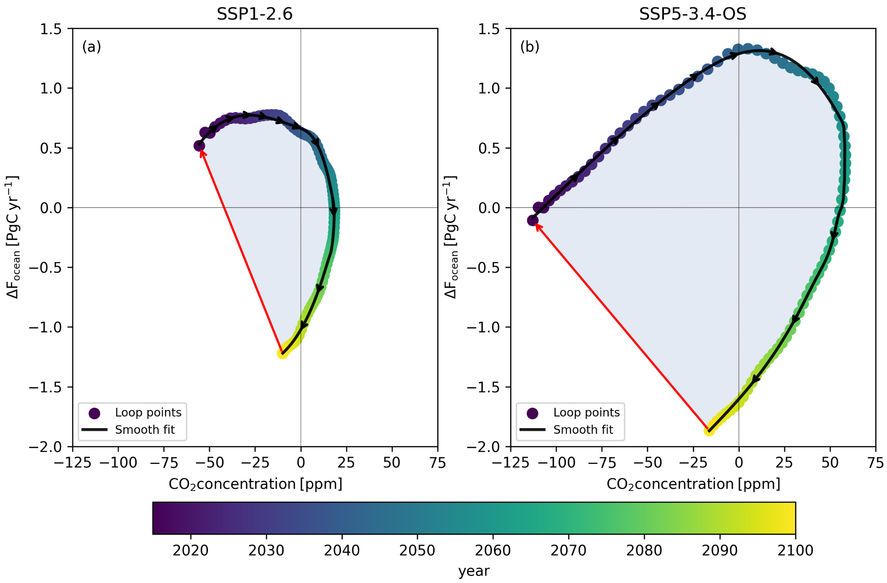
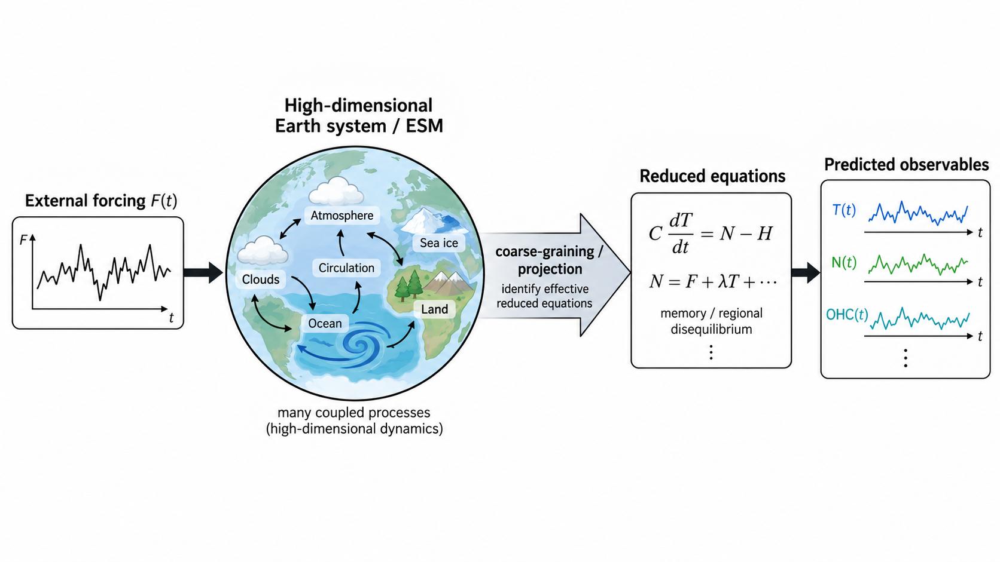
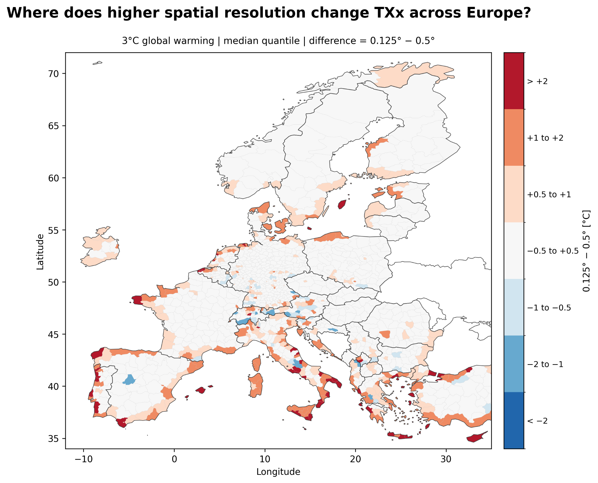
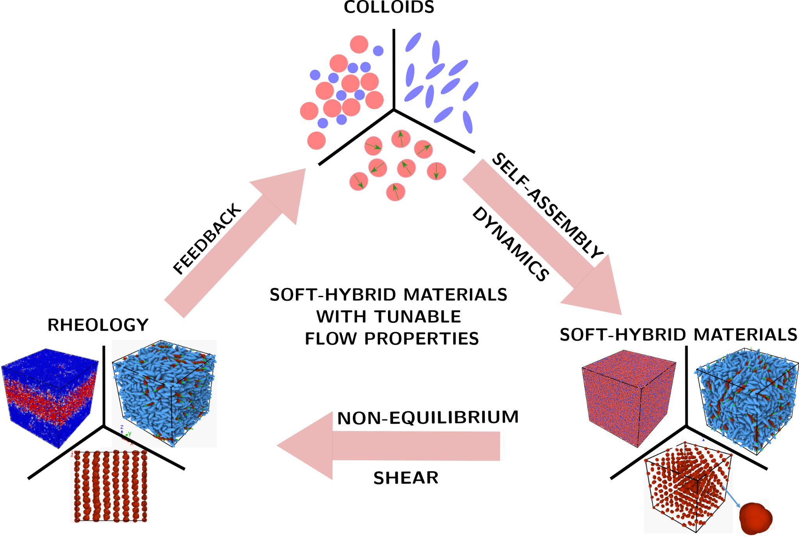
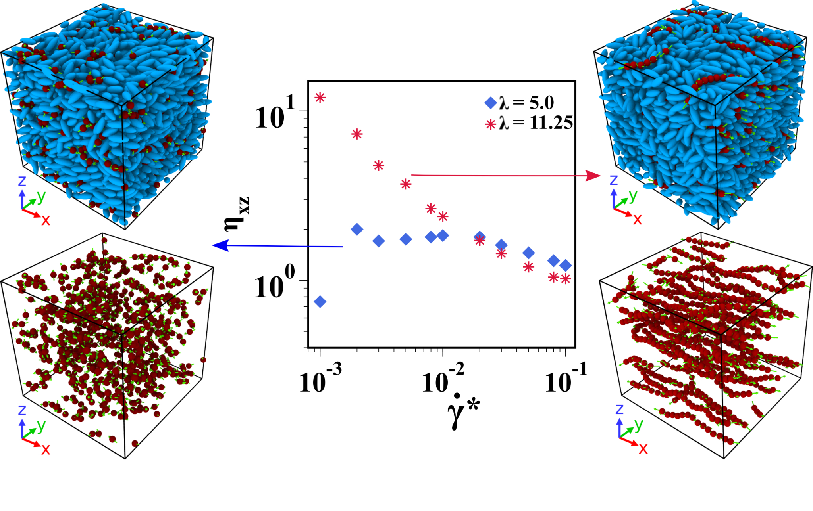
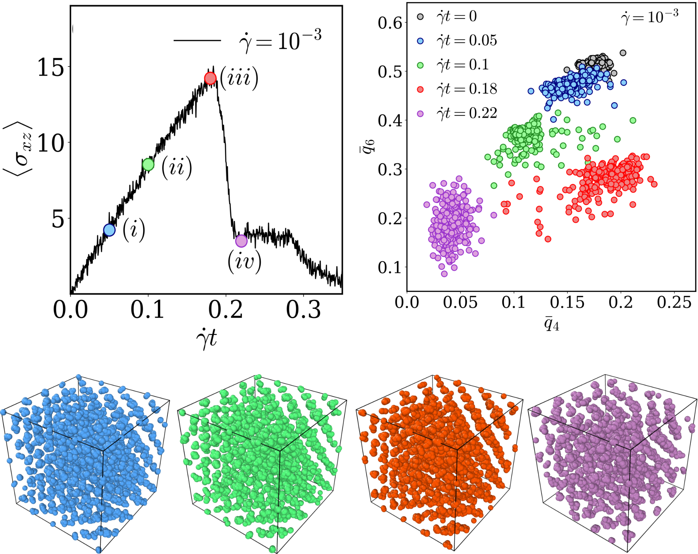

Research
Our research explores how complex systems respond to external forcing, combining equilibrium and non-equilibrium statistical physics with computational modelling across climate and soft matter.
Climate & Earth Systems
Anthropogenic forcing perturbs the coupled atmosphere, ocean, land and carbon cycle across widely differing spatial and temporal scales. As external forcing strengthens or changes rapidly, its timescale can compete with the internal adjustment timescales of the Earth system. The resulting climate response may exhibit delayed feedbacks, evolving carbon-sink efficiencies, dynamical memory and dependence on the preceding forcing trajectory. Our research investigates these mechanisms, including hysteresis, overshoot and incomplete recovery, using concepts from non-equilibrium statistical physics, reduced-complexity modelling and comprehensive Earth-system simulations.
At regional scales, global climate change produces spatially heterogeneous patterns of warming, extremes and associated impacts. We examine how these regional responses vary with warming pathways and with the resolution, downscaling and spatial aggregation of climate information, and how they can be represented in climate-impact assessment and emulation.
Climate response, memory and irreversibility
We investigate how climate response depends on the history of external forcing, not only its instantaneous magnitude. This work examines dynamical memory, delayed feedbacks, competing timescales and hysteresis, including the extent of recovery and potential residual changes following climate overshoot.
A key motivation is to determine when a state-based description is insufficient: two climate trajectories may share similar instantaneous forcing or warming yet differ in their fluxes and subsequent evolution. We study these differences through transient and overshoot experiments, focusing on the interplay of ocean adjustment, carbon-cycle feedbacks and forcing history.

Reduced-complexity climate modelling
We develop and apply reduced-complexity representations of climate and carbon-cycle dynamics, informed by comprehensive Earth-system simulations. A central goal is to identify effective equations that retain key feedbacks, memory effects and slow modes while making climate response tractable across forcing scenarios.
Reducing the dimensionality of the system is not simply a numerical shortcut. It offers a way to isolate physically meaningful response modes and test which aspects of complex dynamics must be retained for robust predictions under transient forcing and overshoot.

Regional climate change, extremes and impacts
We analyse regional climate responses and the sensitivity of climate-impact indicators to spatial resolution, downscaling and aggregation. Within RIME-X, this includes assessing how higher-resolution climate information changes estimates of temperature extremes across European regions and warming pathways.
By comparing regional indicators across spatial scales, we investigate where coarse-graining changes estimated extremes and where high resolution adds information. This helps clarify how global climate signals are translated into decision-relevant regional quantities.

Soft Matter & Disordered Systems
Our earlier work examines how microscopic structure, preparation history and interactions govern rheology, yielding, and phase behavior in soft and disordered materials.
Rheology of soft materials
Toothpaste, emulsions, colloidal suspensions and foams are all built from colloidal particles with different shapes, sizes and interactions. Under an imposed shear they show a striking transient response before settling into a homogeneously flowing steady state.
The central questions are which microscopic processes start the flow, how inhomogeneous flow patterns form, and what drives shear-induced transitions. Because the flow behaviour depends on the properties of the colloids, these can be tuned to reach desired properties at the macroscopic scale. Our work explores this interplay between microstructure and rheology, which is key to designing soft hybrid materials. Current systems of interest are soft glassy materials, mixtures of liquid crystals and magnetic nanoparticles, and cluster crystals.

Amorphous solids
Glassy materials, from soft matter to metallic alloys, yield under mechanical loading. The nature of this yielding transition is still debated. During yielding, glasses often form shear bands: inhomogeneous flow patterns that precede catastrophic failure. Their origin is closely tied to how flow begins in an amorphous solid.
Our simulations suggest that yielding belongs to the directed percolation universality class. At low shear rates, the percolating cluster that forms at the onset of flow evolves into a transient shear band. These bands appear only for specific combinations of sample age, temperature and shear rate, showing how much the properties of a glass depend on how it was prepared.
Mixtures of liquid crystals and magnetic nanoparticles
Mixtures of magnetic nanoparticles and liquid crystals are soft hybrid materials with promising new functions. Their equilibrium self-assembly is well explored, but their dynamics and rheology are not.
Our work shows that the dense, anisotropic liquid-crystal matrix strongly affects how the magnetic particles move, while the matrix's own dynamics stay largely unchanged. The tendency of the magnetic particles to form structures also has a profound effect on how the mixture flows.

Yielding of cluster crystals
Real crystals at finite temperature always contain point defects, and their dynamics shape how crystals respond to shear, producing nonlinear effects such as ductility. Understanding plastic deformation means comparing the time scales of defect diffusion at rest with those set by the shear, but a suitable model system has been missing.
We use cluster crystals, an archetypal model of defect-rich crystals in which several particles occupy each lattice site. Shearing them over a wide range of rates, both faster and much slower than equilibrium diffusion, we find that yielding does not depend on particle diffusion and proceeds through plastic deformation of the underlying crystal structure.
